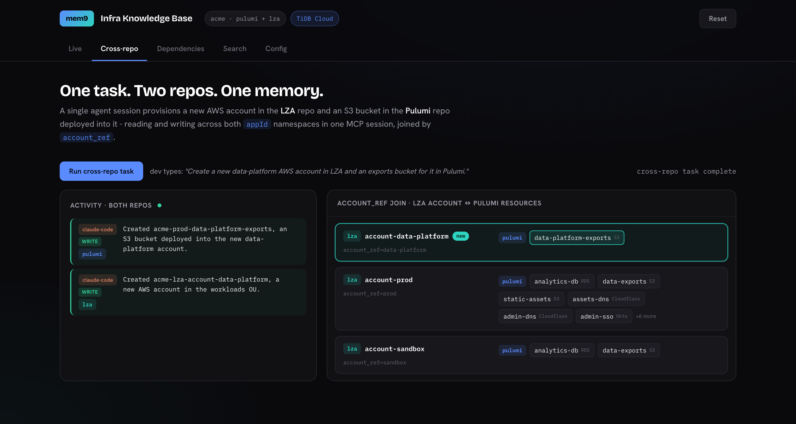
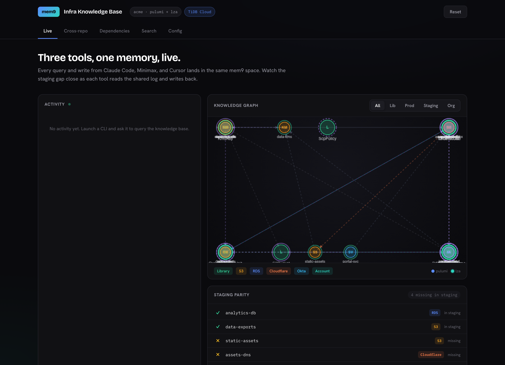
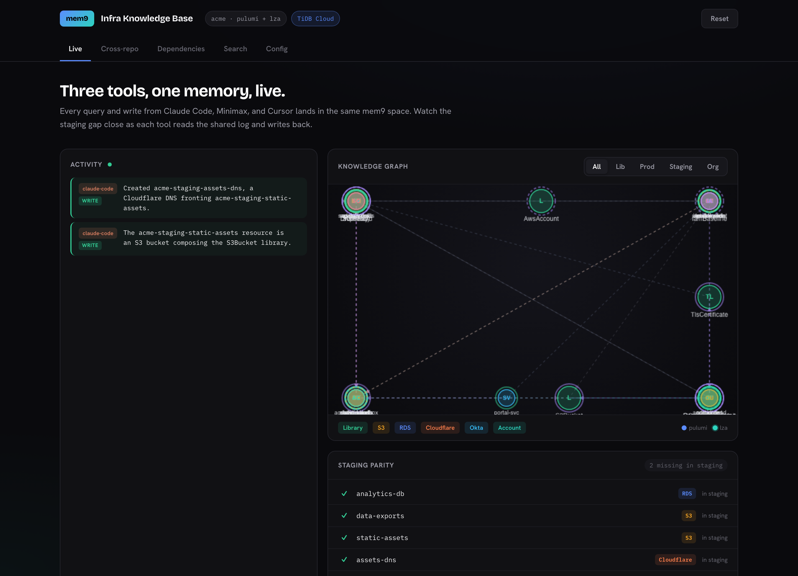
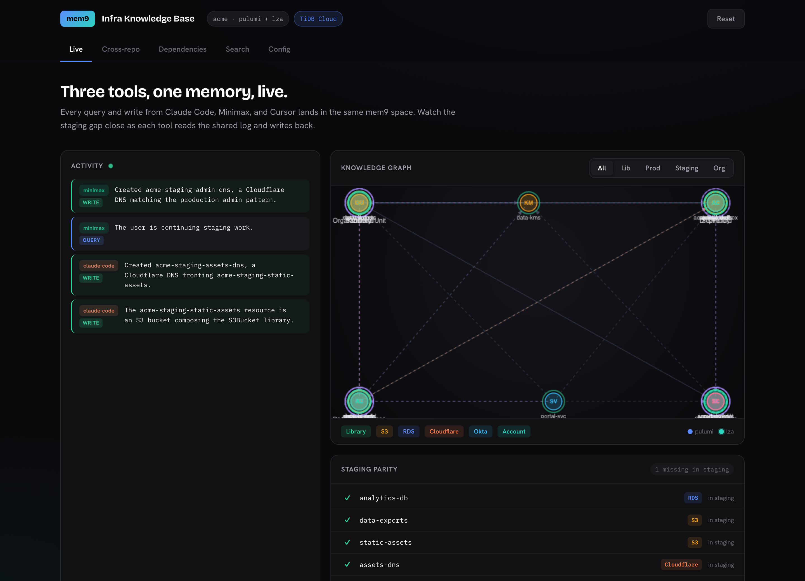
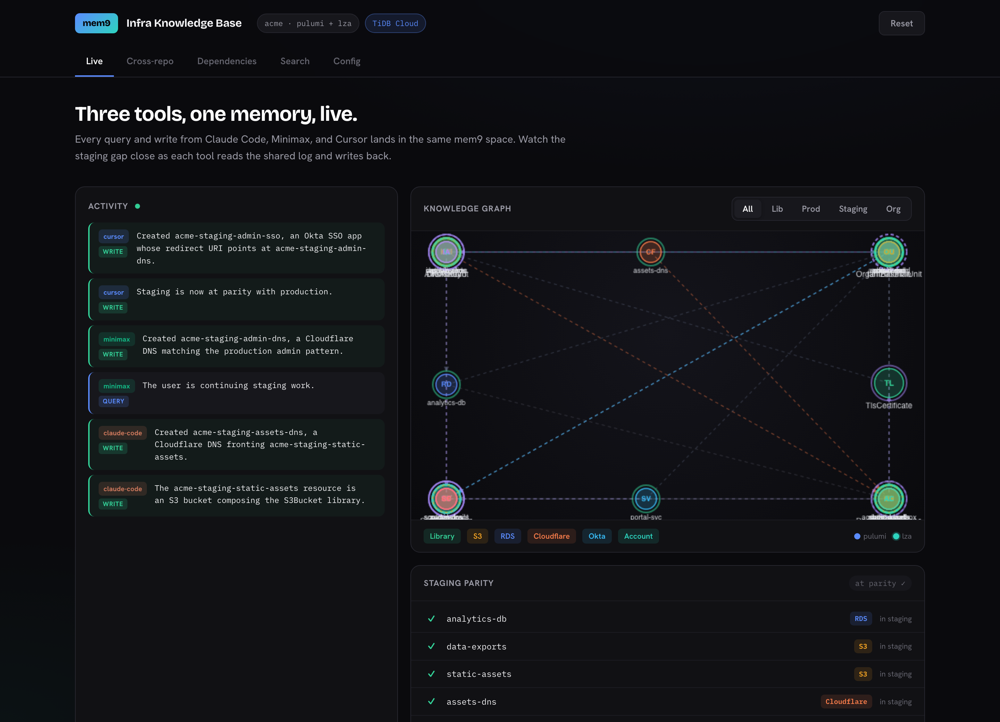

Bottom line. mem9 gives a team of AI coding agents one shared, queryable memory on TiDB Cloud. Agents read before they build and write back when done - so none starts cold or duplicates work. It is isolated per team, an agent can work across repos in a single session, and it answers the one question a vector store cannot: the transitive blast radius of a change. Every screenshot in this brief is a live read or write against TiDB Cloud.
The problem
How mem9 solves it
Shown in
Each team's knowledge must stay private - no team reading another's.
One TiDB Cloud cluster per team (a mem9 space). A team's key reaches only its own memory; isolation is enforced by the platform, not application code.
§ The model
One integration should serve many repositories, not one wiring per repo.
Within a team, repos are appId namespaces on one cluster and the agent routes to the right one. Across teams, separate keys mean separate clusters.
§ The model
A single task often spans repos - create a resource in one, the dependent resource in another.
One agent session writes to each repo's namespace and links the records by account_ref - one integration, two repos, no manual hand-off.
§ One task, two repos
Some teams require a self-hosted deployment.
Supported. Vector and graph run self-hosted; full-text search is TiDB Cloud only today.
§ Deployment
Architecture · mem9 on TiDB
mem9 is the memory. TiDB is the engine.
mem9 is the agent-facing product - one memory, many agents: a shared, persistent layer every coding agent reads and writes through a single key, with hybrid recall and a human-inspectable dashboard. An agent reaches it through two layers - its MCP server, which calls the mem9 REST API. And mem9 is TiDB Cloud at its core: the SQL layer, TiKV, vector and full-text search, TiFlash, and branching that store and serve every memory all run inside it - one engine, no separate vector database or sync layer.
An agent reaches mem9 through two layers - its MCP server, which calls the mem9 REST API. Inside mem9, a single TiDB Cloud engine holds the relational state, the dependency graph, vector embeddings, and full-text - the same store that computes the blast radius. One engine, no separate vector database, no ETL, no sync layer.
The model
Team = cluster. Repo = namespace.
mem9 maps onto how a team already works. A team is a mem9 space - one key, one isolated TiDB Cloud cluster. A repo is an appId namespace inside it, so repos share a cluster but keep separate recall scopes. Another team is another cluster, reachable only with its own key.
One key per team. Inside a team, repos are appId namespaces on the same cluster, joined by account_ref; across teams, separate keys mean separate clusters and zero shared recall.
Headline · one task, two repos
One task, two repos.
A single task often spans repos - create a new AWS account in the LZA repo and the S3 bucket for it in the Pulumi repo. One agent, given one plain-language request, writes the account to acme_lza_kb and the bucket to acme_pulumi_kb - two separate namespaces - and links them with account_ref. No second session, no manual hand-off.

Dashboard · Cross-repoLeft: one activity feed shows the same agent writing to both repos. Right: the account_ref join - the new data-platform account and its Pulumi exports bucket, created together and linked.
Why it matters. The agent doesn't need to be told which repo owns what. It routes each write to the right namespace and records the cross-repo link, so the next session - in either repo - already knows the account and its bucket belong together.
The collaboration
Three tools, one memory, warm hand-offs.
Production is complete; staging has drifted by four components. Three different agents bring it back to parity - the developer only states the goal. Every agent's rules file (CLAUDE.md / AGENTS.md / .cursorrules) makes the same first move non-negotiable: query mem9 before writing anything. So each step below runs the same shape - recall, compose, write back.

Starting pointFeed empty; the staging-parity strip shows 4 missing.
STEP 1Claude Code
"Bring staging up to parity with production - start with the static-assets bucket and its CDN."
recall the gap → compose the S3 + DNS libraries → write both components back, with the dns-fronts-bucket edge.
Result. Staging gains the static-assets bucket and its CDN. Gap 4 → 2.

Result · Claude CodeBoth writes land in the shared feed; the parity strip drops to 2 missing.
STEP 2Minimax
"Keep bringing staging to parity with prod - it still needs the admin-portal DNS."
recall the shared session log (what Claude just built) → compose the admin DnsRecord → write it back. No re-briefing.
Result. The admin-portal DNS lands - Minimax never had to be re-briefed. Gap 2 → 1.

Result · MinimaxIts query ("continuing staging work") and write join the same timeline as Claude Code's. 1 missing.
STEP 3Cursor
"Finish bringing staging to parity - add the admin SSO app."
hybrid-search the prod SSO app → trace its depends_on / redirects_to chain → compose and write the matching staging SSO app.
Result. The SSO app's redirect URI points at the admin DNS; staging reaches parity. Gap 1 → 0.

Result · CursorOne timeline now spans all three tools; the final write reads "Staging is now at parity with production." 0 missing.
Why TiDB
The question similarity can't answer.
A vector store finds things that look related. It cannot compute a transitive closure - "what, exactly, breaks if I change this?" That is graph reachability. mem9 records every depends_on and composition edge; one recursive traversal walks the chain to any depth.
Run that in reverse from KmsKey - "what breaks if we rotate it?" - and the answer is 13 components across four depths. No flat search surfaces this; only walking the graph does.
Dashboard · Dependencies"What breaks if we rotate KmsKey?" Each hop is a column; 13 components fan across four depths and funnel onto the anchored foundation. The Trace panel reads each chain as a sentence.
One engine, not four
Approach
Graph reachability
Semantic recall
Atomic agent state
S3 / filesystem
no traversal
no
no transactions
Vector DB only
similarity ≠ reachability
yes
no
Four separate systems
partial, with ETL
yes
no cross-system atomicity
mem9 → TiDB Cloud
recursive traversal
vector + full-text
one transaction
Graph, vector embeddings, and full-text live in the same store - the same recall that answers "what encrypts production data" also computes the blast radius above. No separate vector DB, no ETL, consistent across concurrent writes from all three tools.
S3 is the filing cabinet for artifacts. mem9 is the brain agents query.
Architecture & deployment
One store. One plug. One key.
MCP is the plug
Every tool loads the same Model Context Protocol config - one named server per repo. No custom glue per tool.
One store, every pattern
Relational state, the dependency graph, vector embeddings, and full-text all live in the same memory.
Just an API key
mem9 manages the TiDB Cloud cluster. Agents read and write through one key and never touch credentials.
The standing instruction
The developer types a normal request. The prescriptive part lives in each tool's rules file (CLAUDE.md / AGENTS.md / .cursorrules), so the agent queries first, composes, and writes back on every run with no per-task hand-holding.
Dashboard · ConfigThe five-step standing instruction every tool loads, and the one-entry-per-repo MCP wiring that makes it automatic.
Self-hosted: available - vector and graph run on-prem. Full-text search is TiDB Cloud only today, so this brief uses Cloud to show hybrid recall end to end.